프런티어의 오늘이
모두의 오늘은 아니다
수학 연구가 자동화되는 이야기에 놀라는 사람과 아직 AI에 돈을 내지 않는 사람은 같은 시대에 살고 있다. 영상은 이 간격을 시간과 도메인, 두 축으로 설명한다.
노정석의 time-gap × domain-gap 지도에서 프런티어 랩은 먼저 움직이고, 후발 모델과 산업별 AI, 대중의 도입은 뒤따른다. 또 코딩·수학처럼 결과를 검증하기 쉬운 디지털 영역과 실제 실험·현장 배치가 필요한 물리 영역 사이에도 간격이 있다.
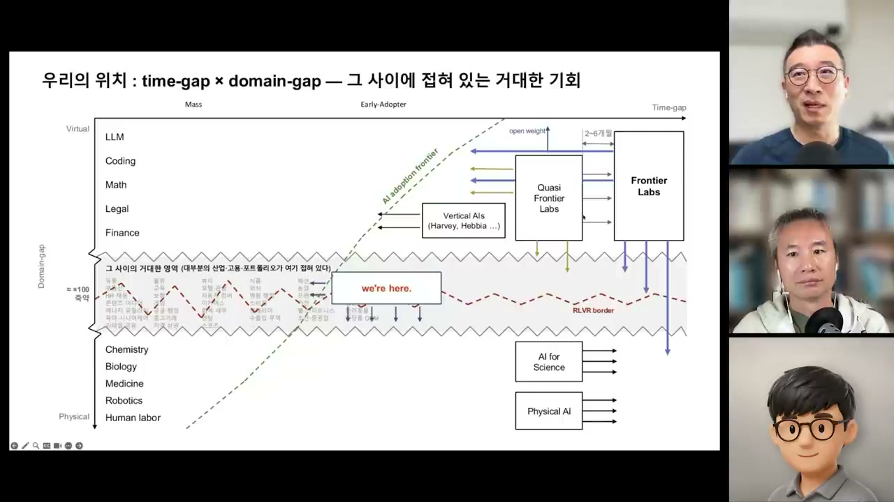
용어 노트 · RLVR 경계
RLVR은 검증 가능한 보상을 활용한 강화학습을 뜻한다. 이 글에서 ‘경계’는 결과의 좋고 나쁨을 학습 신호로 만들기 쉬운 영역과 어려운 영역을 구분하는 설명 도구다. 물리 세계는 검증과 데이터 수집에 더 많은 시간·비용이 들 수 있으며, 경계의 위치는 고정된 사실로 제시되지 않는다.
이 지도에서 사업의 기회는 ‘누가 가장 똑똑한 모델을 갖는가’라는 질문보다 넓다. 최신 모델의 가치를 먼저 이해하고, 자신의 산업에 적용하고, 도입이 늦은 고객에게 전달하는 일도 기회가 된다. 다만 프런티어 랩이 같은 업무로 확장할 가능성을 계속 살펴야 한다.
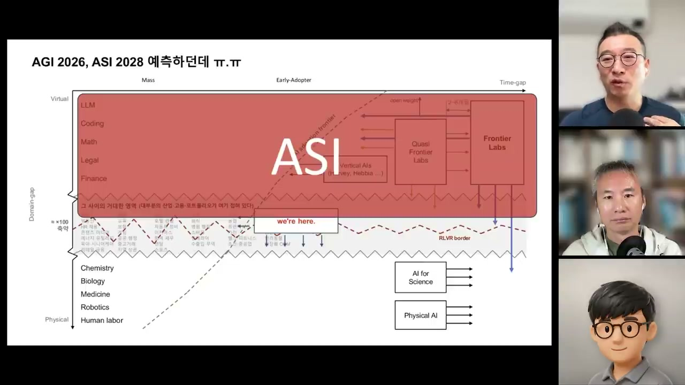
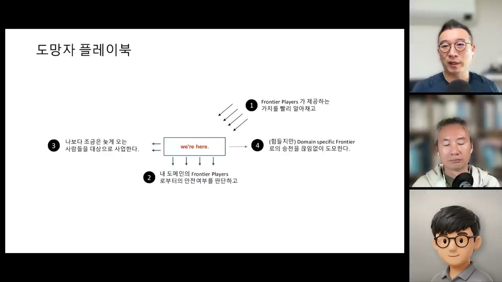
깔리는 돈과 버는 돈 사이,
아직 메워지지 않은 간격
영상의 투자 논의는 세 숫자에서 출발한다. 아래는 출연자가 슬라이드에 제시한 값이며, 집계 범위와 기준 시점이 서로 다르다.
- 2026년 빅테크 4사
설비 투자 추정 - 7,250억달러 / 연간 capex
- 생성형 AI 산업
연환산 매출 추정 - 1,750억달러 / 연환산
- 엔비디아 데이터센터
매출로 제시된 값 - 890억달러 / 분기
앞의 두 값의 단순 비율은 약 4.1배다. 빅테크 전체 capex와 생성형 AI 매출은 같은 범위의 지표가 아니며, 투자와 회수의 시차도 있다. 이 비율을 손실률이나 투자수익률로 해석할 수 없다. 분기 칩 매출은 별도 지표다.
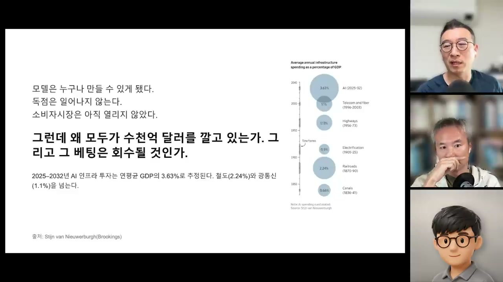
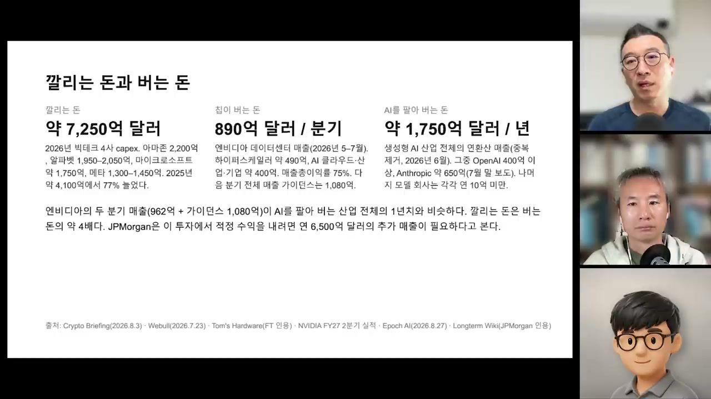
네 가지 관찰이 가리키는 시장
노정석은 프런티어 기술의 공식이 퍼지고, 경쟁 랩이 여럿 존재하며, 유료 소비자시장은 아직 제한적이라고 본다. 그럼에도 미래 수요가 크게 열릴 것이라는 기대가 투자를 밀어 올린다는 해석이다.
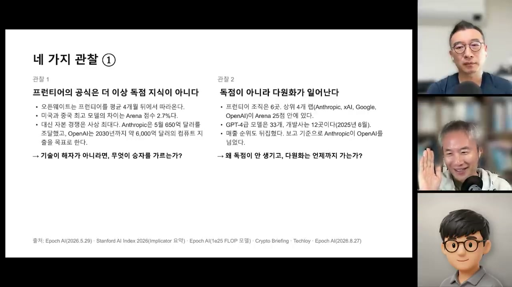
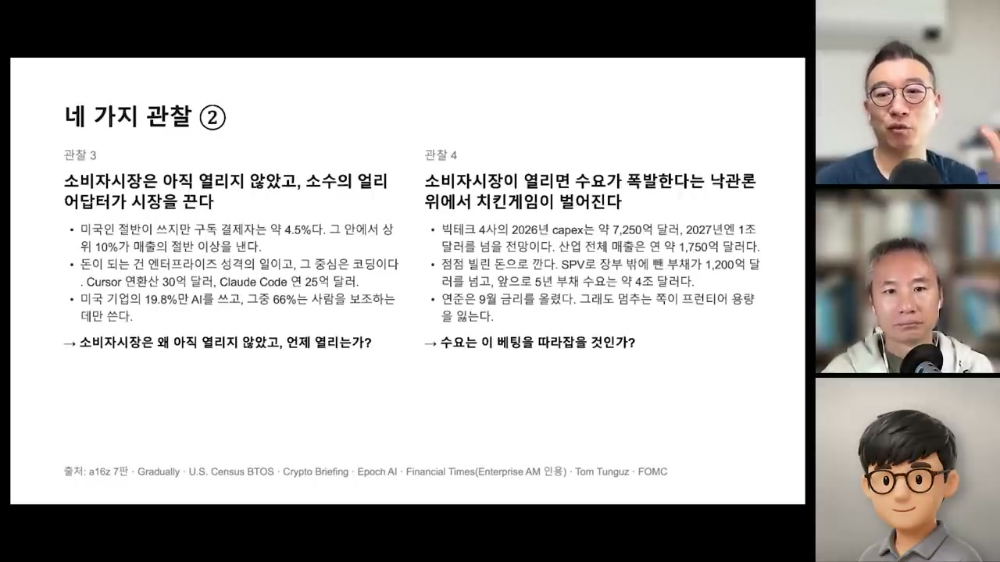
부족하다는 신호, 과열됐다는 신호
영상은 한쪽 결론으로 밀어붙이지 않는다. 토큰 수요와 GPU 예약 가격은 연산 부족을 시사하지만, 빠른 가격 하락과 설비 감가는 투자 회수를 어렵게 만들 수 있다.
수요가 공급을 앞선다는 근거
- 토큰 수요는 연 약 10배, 추론 공급 능력은 연 약 3.4배라는 자료 인용.
- GPU 1년 예약 가격이 반년 동안 약 40% 상승했다는 주장.
- SF 인퍼런스 업체들이 전하는 GPU 조달의 어려움.
회수 속도가 부족하다는 근거
- 토큰 사용량이 10배 늘어도 매출이 같은 비율로 늘지는 않는다.
- 동일 성능의 가격이 매년 5~10배 떨어진다는 추정.
- GPU의 3~5년 감가와 부채 이자가 현금흐름을 압박한다는 논점.
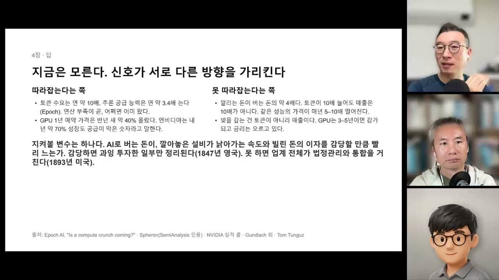
이 글의 해석
GPU 부족은 특정 시점·지역·용도의 공급 제약을 보여줄 수 있다. 산업 전체 투자액이 장기적으로 회수된다는 증거와는 구분해야 한다. 수요량, 판매 가격, 비용과 현금흐름을 함께 관찰할 때 두 신호를 읽을 수 있다.
기술의 방향이 맞아도,
과실은 다른 곳으로 갈 수 있다
“방향은 늘 맞았고, 기울기는 늘 과대평가됐고, 과실은 늘 다른 사람이 가져갔다.”
노정석의 발표 슬라이드 · 00:31:00 · 제공된 노트 기준
철도와 광통신의 비유가 겨냥하는 것은 기술의 실패가 아니다. 기술이 성공해도 공급이 더 빨리 늘거나 경쟁이 가격을 낮추면, 초기 투자자가 기대한 수익을 얻지 못할 수 있다는 문제다.
노정석은 기술이 공개된 이후 경쟁의 중심이 자본 조달·타이밍·유통으로 이동했다고 설명한다. 살아남는 주체로는 자기 현금흐름과 고객을 가진 기업, 붕괴 이후 자산을 낮은 가격에 확보한 기업을 꼽는다.
| 논점 | 철도·광통신의 사례 | AI에 던지는 질문 |
|---|---|---|
| 기술의 확산 | 기술 접근성이 높아지면 노선·자본·타이밍의 경쟁이 중요해진다. | 성능 격차가 줄어들 때 고객과 유통을 누가 확보하는가? |
| 통합의 조건 | 과잉 건설과 금융 충격 이후 구조조정·자산 인수가 진행된다. | 외부 자금이 줄어들어도 운영을 지속할 수 있는가? |
| 대중시장 | 배달 제도, 공장 재설계, 저렴한 대역폭이 새 시장을 연다. | AI를 맡길 제도와 경제적인 단가, 새로운 업무 흐름이 있는가? |
| 자산의 수명 | 물리 인프라는 오랫동안 남아 후속 사업의 기반이 된다. | 모델의 짧은 성능 우위와 빠른 설비 감가를 어떻게 관리하는가? |
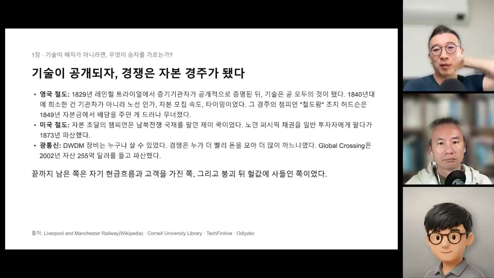
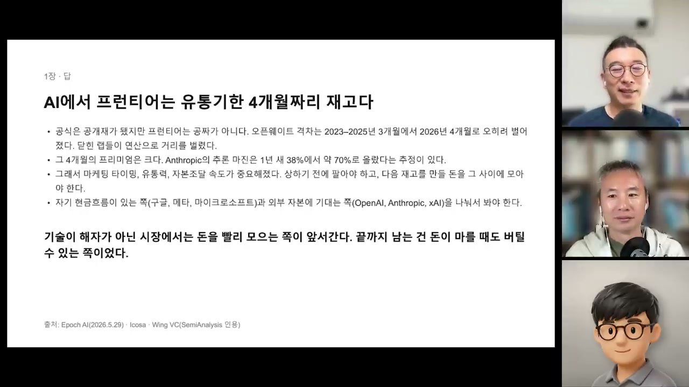
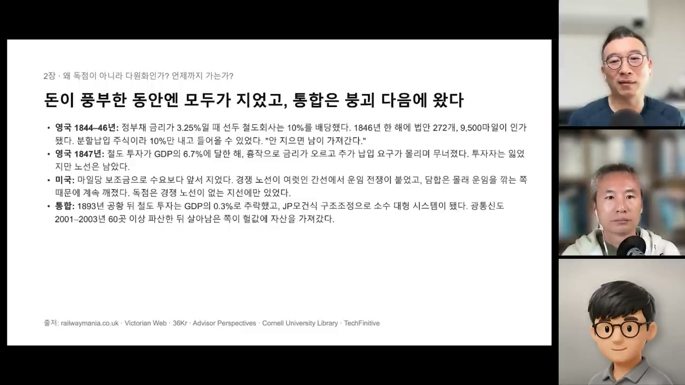
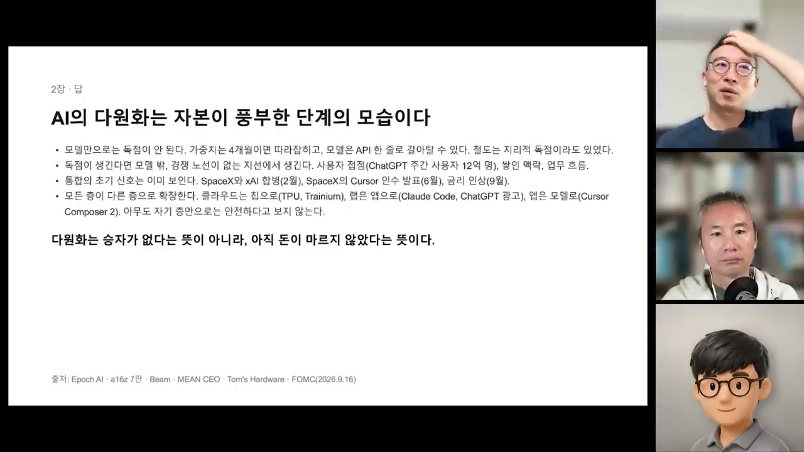
소비자시장은 업무를 다시 설계한 뒤 열린다
증기기관을 전기모터로 바꾸는 것만으로 공장의 생산성이 곧바로 뛰지 않았다는 비유는 오늘의 지식노동에도 적용된다. 기존 업무에 AI 도구를 덧붙이는 단계에서, AI를 전제로 조직과 절차를 바꾸는 단계로 넘어가야 한다는 주장이다.
영상은 대중시장의 조건으로 단가 하락, 에이전트를 신뢰하고 맡길 제도, 사람들이 시간을 보내고 싶어 하는 제품을 꼽는다. 코딩이 먼저 열린 이유도 결과를 테스트로 확인할 수 있는 특성과 연결한다.
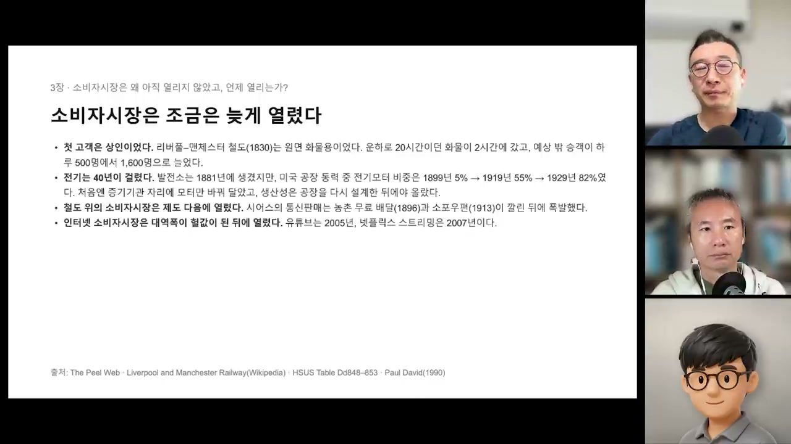
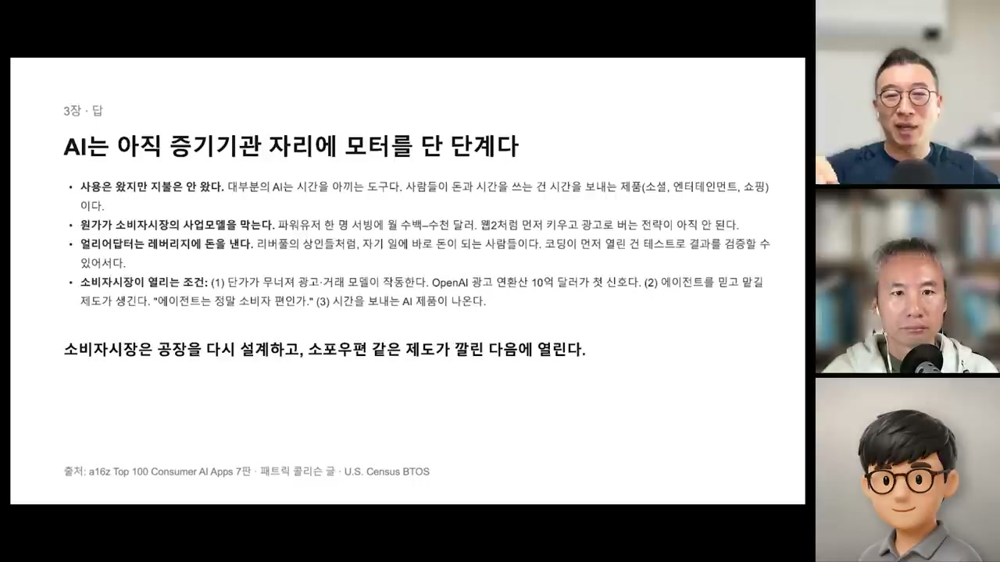
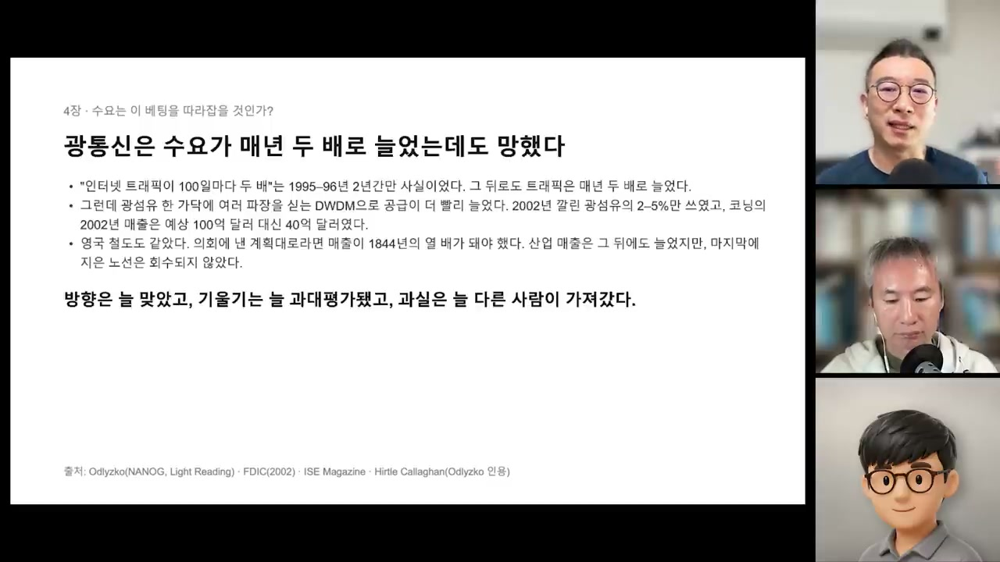
희소성은 어느 층에 남는가
영상의 가치 지도는 칩, 모델, 오케스트레이션, 앱으로 나뉜다. 사업자들이 서로의 층으로 확장하는 가운데, 노정석은 맥락과 책임, 소비자의 관심과 브랜드가 중요해질 것이라고 본다.
일상의 사용과 지불이 일어나는 곳. 단가·제도·제품 경험이 맞물릴 때 큰 시장이 열릴 수 있다는 가설.
모델과 도구를 연결해 업무를 수행하는 층. 고객 맥락, 검증 기준, 책임의 누적이 핵심 논점.
프런티어 성능의 단기 프리미엄과 후행 모델의 가격 경쟁이 공존한다는 설명.
당장의 공급 제약이 수익 기회를 만들지만 경쟁 기술, 공급 확대, 감가를 함께 살펴야 하는 층.
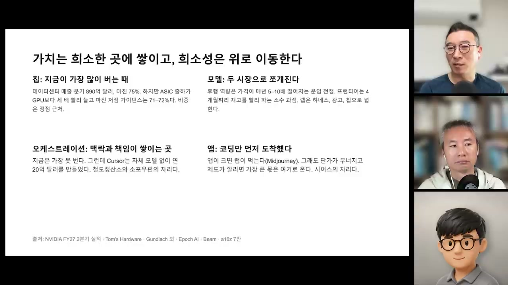
샌프란시스코에서는
“GPU만 있으면 팔린다”
거시적 투자 우려와 함께, 현장에는 당장의 공급 부족이 있다. 박종현의 SF 이야기는 그 수요가 어떤 형태로 구체화되는지 보여준다.
박종현은 2026년 9월 말부터 10월 초까지 만난 인퍼런스 업체들이 “판매보다 GPU 구매가 어렵다”고 답했다고 전한다. 로봇 반응 속도를 위해 가까운 GPU를 찾는 팀, 영화 제작을 위한 영상 생성 인퍼런스처럼 용도별 서비스가 분화하는 모습도 소개한다.
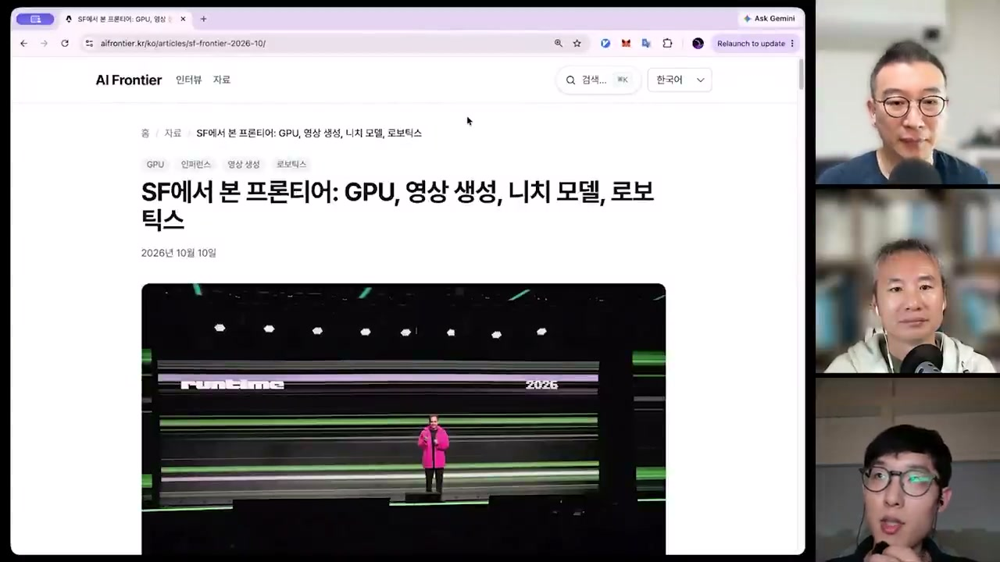
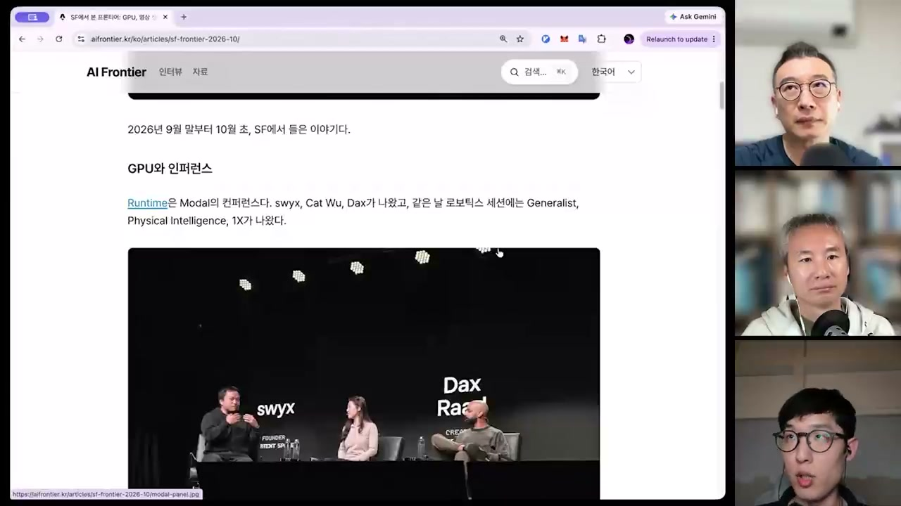
완벽한 생성보다 목적에 맞는 정밀도
AI 제작 영화 상영회에서 우는 관객을 봤다는 일화는 기술 품질과 감정적 효용이 같은 기준으로 평가되지 않을 수 있음을 보여준다. 다만 영화 제작사 전반의 AI 활용 규모에 대한 현지 발언은 본인도 확인하지 못했다고 선을 긋는다.
또 하나의 사례는 Descript다. 박종현은 타이밍 오차에 민감한 전사 모델을 B2C 기업이 직접 개발한 점을 중요하게 본다. 범용 모델의 최고 성능보다 특정 제품의 요구를 정확하게 만족시키는 능력이 사업의 기준이 될 수 있다는 관찰이다.
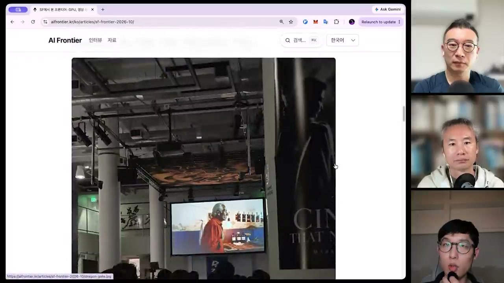
로보틱스의 확장은 현장에서 데이터를 얻는 일
Generalist, Physical Intelligence, 1X에 관한 이야기는 배치와 확장에 집중된다. 다양한 산업 현장에 로봇을 투입하거나 대규모 영상 데이터를 모으는 방식이다. 동시에 영상 데이터의 부피, 실제 이동의 거친 동작, 주문과 배송 사이의 간격도 남아 있다.
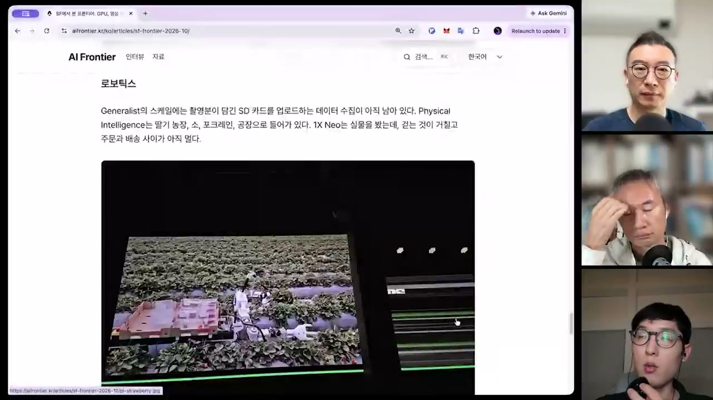
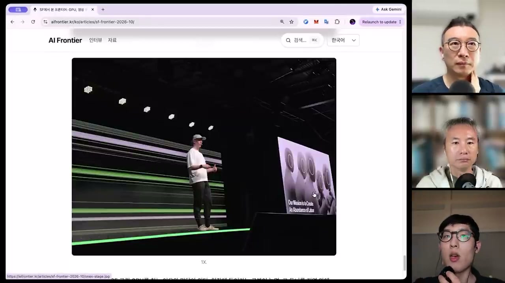
거시 분석과 현장 관찰의 접점
SF의 사례는 특수 목적 인퍼런스와 현장 데이터에 수요가 있다는 단서다. 그것이 코딩 다음의 대규모 시장으로 성장할지는 별도 질문이다. 배치 규모, 고객 지불, 운영 비용, 반복 사용을 확인해야 한다.
722편의 원고가 던진 질문:
누가 이해하고, 누가 검증하는가
최승준이 전하는 ‘Mathpocalypse’의 충격은 AI가 문제를 풀었다는 소식에 그치지 않는다. 연구 결과가 공동체의 처리 속도를 넘어 쏟아질 때, 수학을 한다는 일의 기준 자체가 흔들린다.
제공된 노트에 따르면 OpenAI는 약 4,000개의 미해결 문제를 모델에 제시하고, 372개 연구 결과 계열에 해당하는 722편의 원고를 공개했다. 이후 3편이 철회돼 719편이 됐다고 소개된다. 문제 수, 결과 계열 수, 원고 수는 서로 다른 집계 단위다.
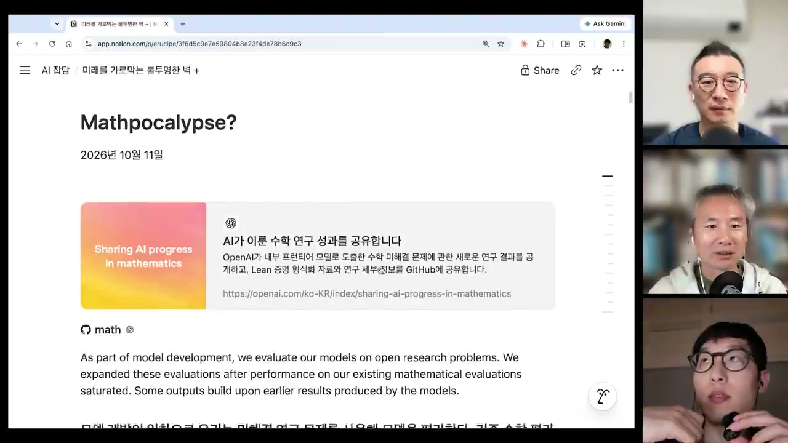
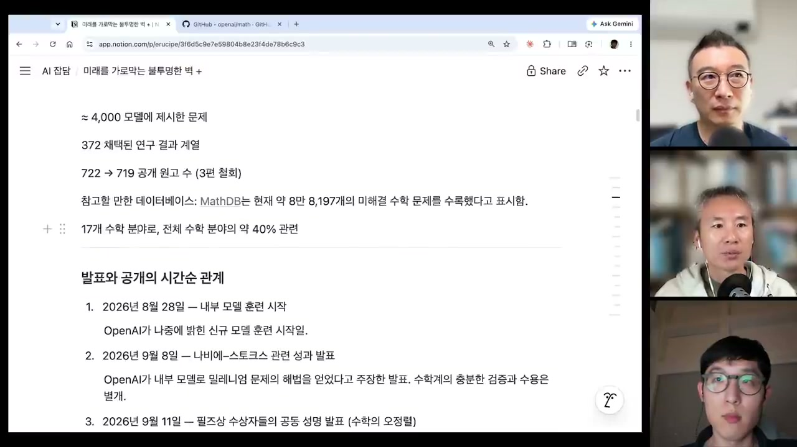
영상에서 정리한 공개 과정
- 내부 모델 훈련 재개. 자막에서 ‘시작’이 아니라 ‘재개’라고 정정된다.
- 나비에–스토크스 관련 성과 발표.
- 필즈상 수상자들의 공동 성명 소개.
- 100개 이상 해결과 자문단 구성에 관한 설명.
- 자문단 권고.
- 수학 연구 원고 대량 공개.
위 순서는 영상 노트의 정리다. 개별 사건의 원문 및 정확한 경과는 이 기사에서 독립 확인하지 않았다.
경탄과 상실은 함께 나타났다
최승준이 만든 반응 주석판에는 경탄·희망뿐 아니라 상실·불안, 연구 기회의 감소, 공로 인정, 비공개 모델의 접근성, 검증 부담이 함께 등장한다. 원고가 정제되지 않아 “왜 공짜 노동을 해야 하는가”라는 불만과, 함께 읽고 소화해야 한다는 제안도 공존한다.
화면의 태그 빈도는 반응을 읽기 위한 분류다. 표본 선정과 중복 태깅 방식을 이 자료만으로 알 수 없으므로, 수학계 전체의 찬반 비율로 읽어서는 안 된다.
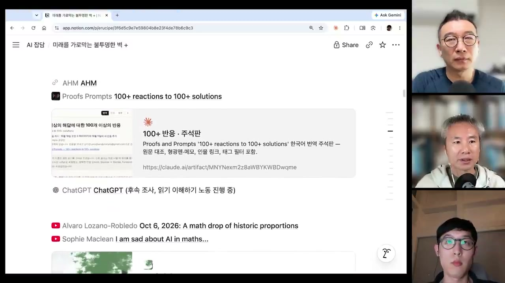
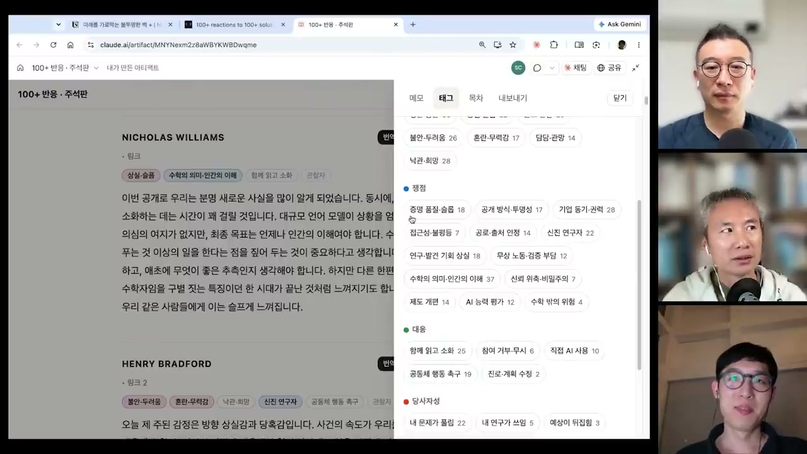
| 구분 | 확인해야 할 것 | 이 노트의 한계 |
|---|---|---|
| 정확성 | 증명이 올바른가? 형식 검증은 어떤 주장과 가정을 확인하는가? | 개별 원고와 증명을 검토하지 않았다. |
| 독창성 | 기존 결과의 재구성인가, 새로운 기법이나 발견인가? | 난이도·독창성 평가는 논쟁 중이라고 소개된다. |
| 이해 | 결과를 사람이 설명하고 다른 연구로 확장할 수 있는가? | 원고의 읽기 어려움에 관한 반응을 전한다. |
| 제도 | 검증 노동, 접근성, 공로 인정과 연구자 교육을 어떻게 설계할 것인가? | 여러 반응을 소개하지만 공동체의 합의를 제시하지 않는다. |
먼저 충격을 겪은 업계의 시선
영상은 소프트웨어 업계 일부 인사들이 “우리는 이미 겪었다”며 수학계의 반응을 냉담하게 바라봤다고 전한다. Tao의 ‘Math 2.0’ 사고실험도 소개된다. 효과가 있는 결과를 얻었지만 그 기전을 충분히 이해하지 못할 때, 진보와 이해를 어떻게 함께 추구할 것인가라는 질문이다.
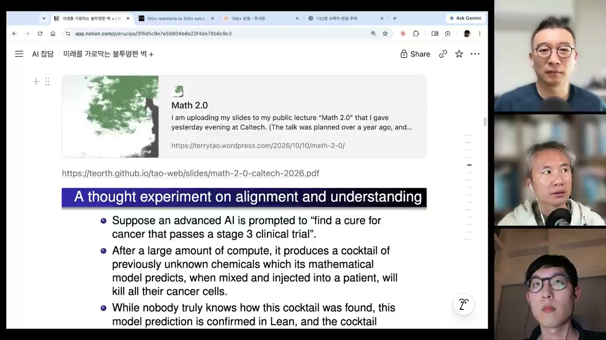
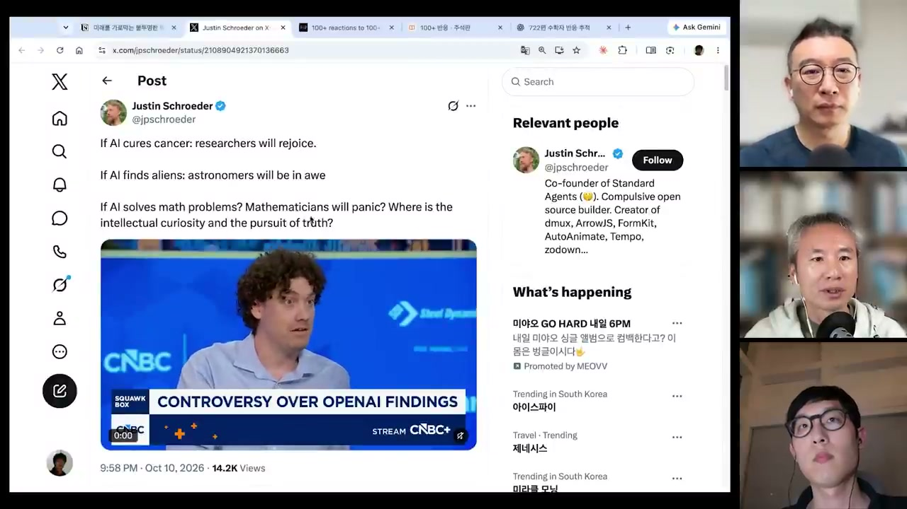
암호학으로 이어지는 긴장
최승준은 AI 가속 수학이 암호학의 안전성 가정에도 영향을 줄 수 있다는 Vitalik Buterin의 우려를 소개한다. 여기서 다루는 것은 새로운 위험 가능성이다. 특정 암호가 실제로 깨졌다는 증거나 금융 서비스의 안전성 판정은 이 자료에 없다.
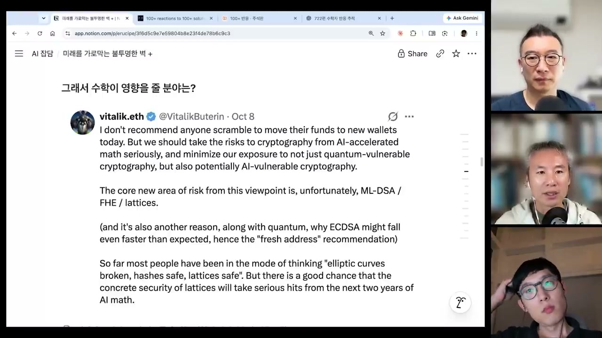
다음 모델을 만드는 성과인가,
기존 아이디어의 재조합인가
영상 후반부는 수학 결과의 양에서 모델 개선의 구조로 이동한다. 최승준은 기업의 관심이 수학 자체보다 더 어려운 문제를 통한 역량 향상에 있을 수 있다고 해석한다. 화면의 내부 모델 성능 곡선도 그 맥락으로 읽는다.
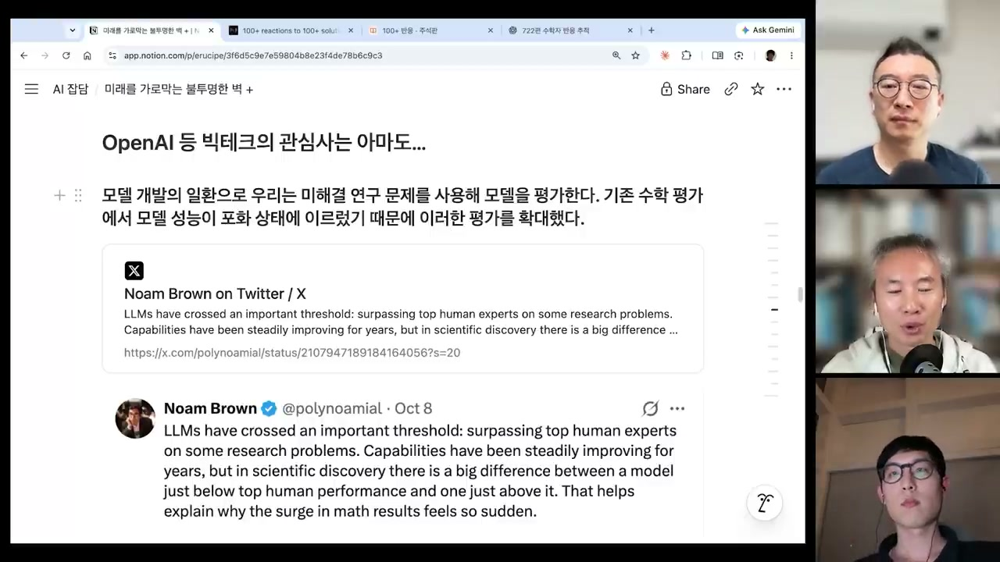
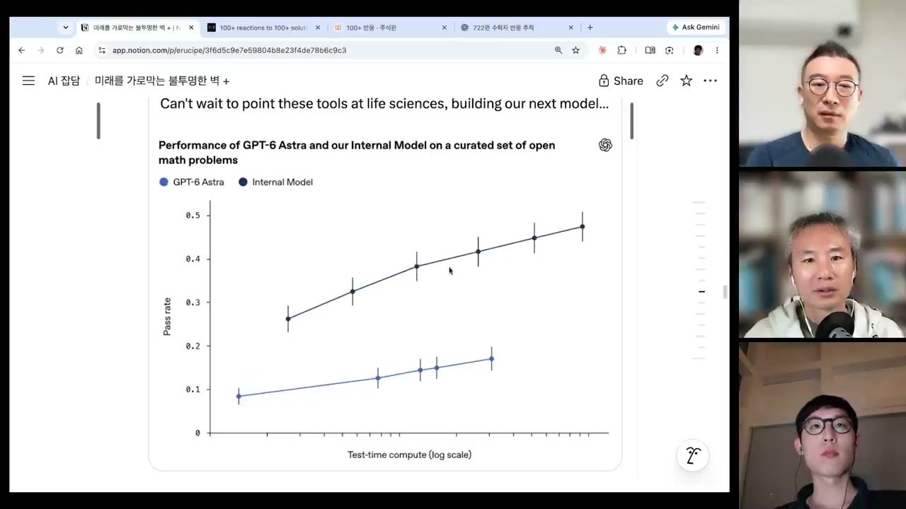
큰 탐색이 다음 학습의 재료가 되는가
노트는 9월 초의 ‘1만 에이전트, 88시간’과 10월 초의 ‘결과당 평균 약 3시간의 ChatGPT Pro Thinking 상당 계산량’을 비교한다. 그러나 두 값은 과제와 집계 단위가 달라, 그대로 나눠 효율 개선 배수를 산출할 수 없다.
초기 탐색에서 나온 좋은 풀이가 다음 학습 데이터가 됐을 것이라는 설명은 출연자가 소개한 추측이다. 실제 훈련 과정이 공개·확인됐다는 뜻은 아니다.
영상에서 논의한 피드백 가설
- ① 탐색여러 시도로 어려운 문제의 풀이를 찾는다.
- ② 검증좋은 결과와 학습에 쓸 경로를 구분한다.
- ③ 학습검증된 경로가 다음 역량의 재료가 될 수 있다.
- ④ 재시도향상된 모델로 새 문제를 탐색한다.
개념을 재구성한 도식이다. 특정 기업의 실제 훈련 파이프라인을 확인한 그림은 아니다.
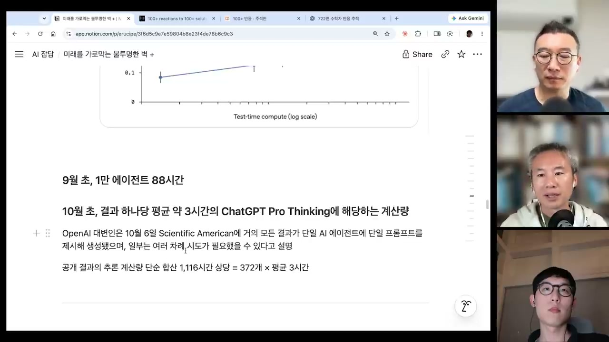
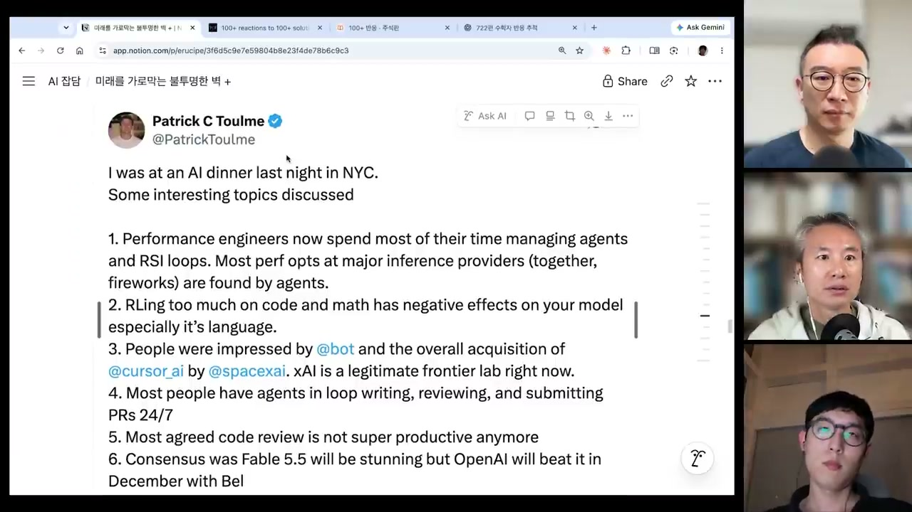
아이디어의 볼록 껍질을 넘을 수 있을까
‘아이디어의 볼록 껍질’은 AI가 기존 생각의 조합 안에 머무는지 묻는 비유다. 기존 영역 안에 새 점을 채우는 것만으로도 연구는 크게 바뀔 수 있다. 작은 변형을 반복하면 경계가 넓어질 수 있다는 반론도 소개된다.
최승준의 Convex Tinkering 자료는 손실을 한정하고 성공의 이득을 열어 두는 실험 전략을 설명한다. 이 비유는 탐색 방식을 생각하는 데 유용하지만 AI의 창의성 한계를 증명하는 수학적 모델로 제시되지는 않는다.
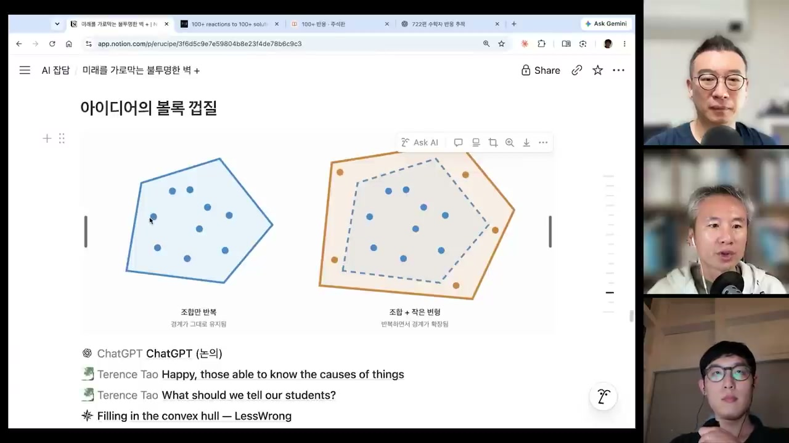
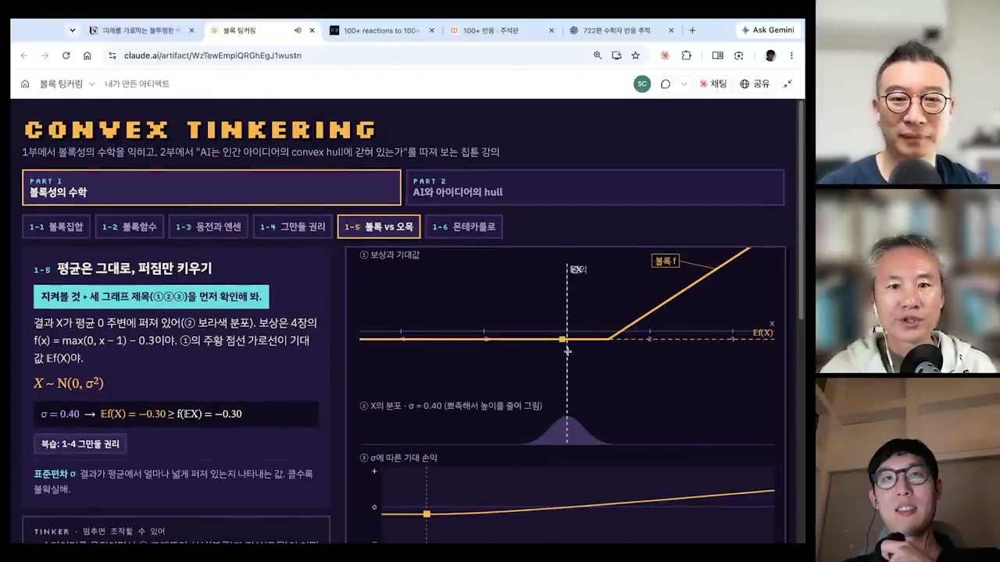
자기개선이 곧 지능 폭발이라는 결론은 아니다
영상에서 소개된 François Chollet의 반론은 과학 역시 스스로를 개선해 왔지만 성취를 늘리기 위해 더 큰 투입이 필요했다는 것이다. 재귀적 자기개선(RSI)이 가능하더라도 성취가 같은 속도로 폭발한다는 보장은 없다는 주장이다.
다른 한편, Michael Nielsen이 인용한 Vernor Vinge의 ‘불투명한 벽’은 기술 증거가 쌓여도 미래의 구체적 모습은 더 예측하기 어려워질 수 있다는 감각을 전한다. 두 관점 모두 이 기사에서는 영상의 소개를 통해 다룬다.
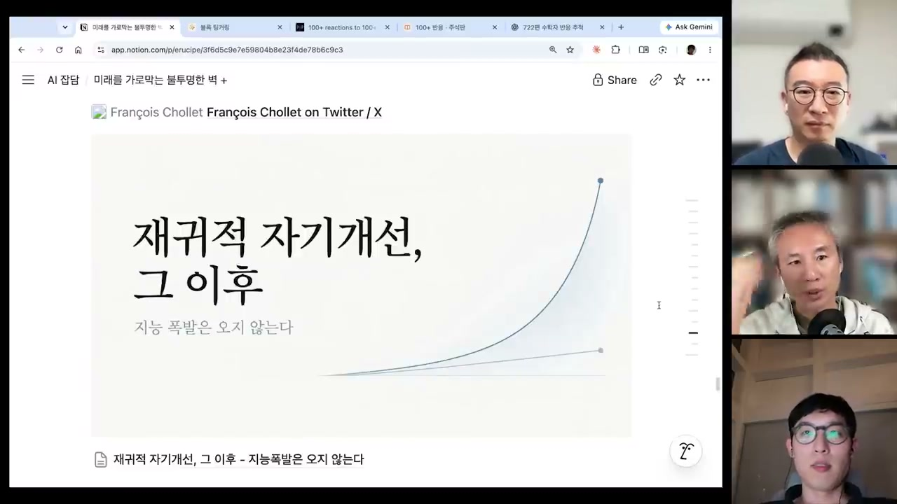
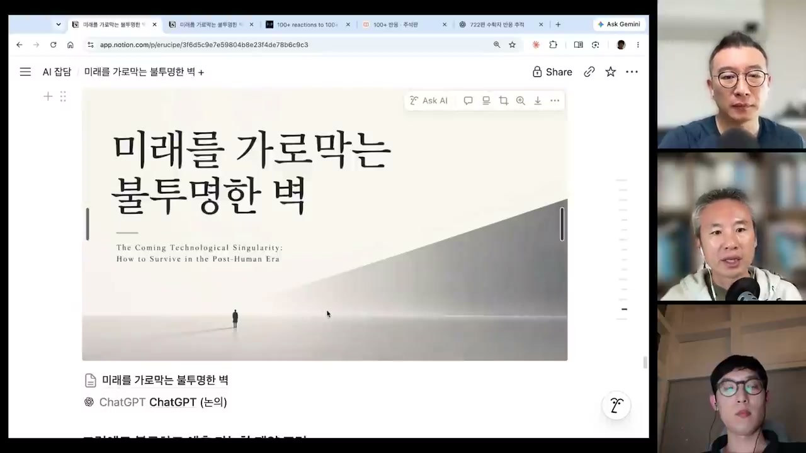
예측을 하나 고르기보다,
변화를 판별할 기준을 만든다
이 대화가 남기는 실용적인 결과는 특이점의 날짜나 거품 붕괴의 시점이 아니다. 서로 다른 신호를 비교하고, 자신의 도메인에서 무엇을 검증할지 정하는 관찰 목록이다.
사업과 연구를 위한 네 단계
- 프런티어의 가치를 빨리 이해한다. 새 모델이 실제로 어떤 업무를 바꾸는지 결과로 확인한다.
- 자신의 도메인이 어디에서 경쟁하는지 판단한다. 범용 기능과 현장 데이터·제도·책임이 필요한 영역을 구분한다.
- 도입이 늦은 고객의 장애물을 해결한다. 설명, 연결, 검증, 운영 부담 중 무엇이 실제 사용을 막는지 찾는다.
- 도메인 고유의 기준과 맥락을 축적한다. 성공 판정, 실패 처리, 데이터와 책임 구조를 반복 가능한 자산으로 만든다.
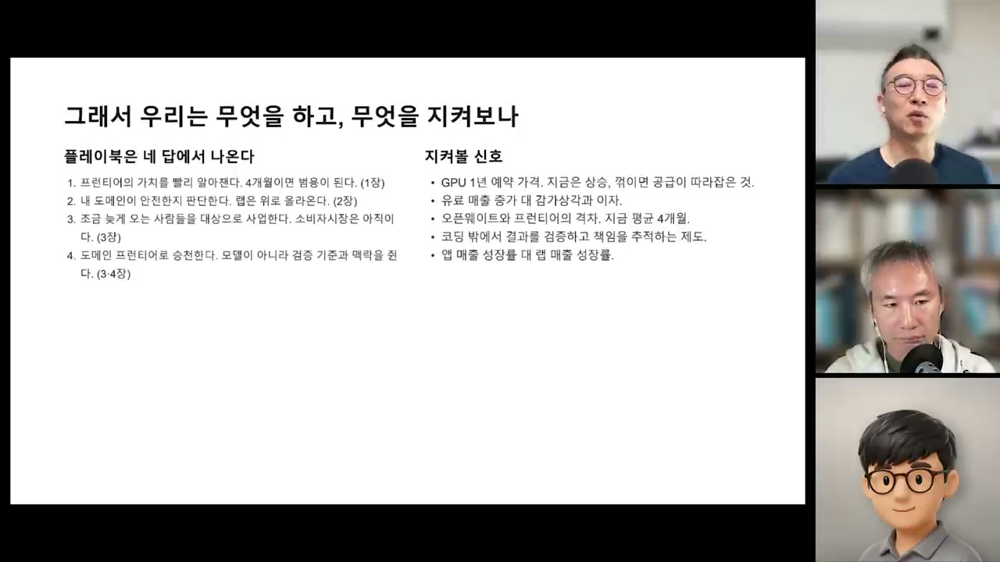
다음 변화를 읽는 관찰 체크리스트
- GPU 예약 가격과 가용성공급 제약이 완화되는가? 지역·용도별 부족과 산업 전체의 공급을 구분한다.
- 유료 매출과 비용의 관계사용량뿐 아니라 매출이 감가상각·이자·운영 비용보다 빠르게 성장하는가?
- 프런티어와 후발 모델의 격차최고 성능의 프리미엄이 얼마나 오래 유지되며, 고객은 그 차이에 지불하는가?
- 코딩 밖의 반복 가능한 업무결과를 검증하고 책임을 추적할 수 있는 업무가 대규모로 채택되는가?
- 앱과 모델 랩의 성장 관계고객 접점의 가치가 앱에 남는가, 모델 제공자가 같은 영역으로 확장하는가?
- 연구 성과의 검증 처리 능력원고 생산 속도에 맞춰 검토·재현·공로 인정의 절차도 개선되는가?
교육과 연구조직에 남는 과제
성과를 만드는 비용이 낮아질수록 결과물의 수만으로 연구를 평가하기는 어려워진다. 이 글의 시사점은 정답의 양뿐 아니라 재현성, 설명 가능성, 새로운 질문을 만드는 능력, 타인의 결과를 검증하는 기여를 함께 볼 필요가 있다는 것이다.
교육에서는 스스로 연습하는 가치와 변화한 도구 환경을 동시에 다뤄야 한다. 영상의 고민은 실패의 비용이 큰 현장일수록 ‘알아차리기 위한 실험’을 충분히 하기 어렵다는 데 있다. 작은 시도를 어떤 기준으로 평가할지 정하는 일이 중요해진다.
체감 가치가 바뀌면 사회적 질문도 바뀐다
마지막 대화는 모델을 대하는 태도와 의식의 문제로 이어진다. 영상은 Anthropic의 정책 업데이트로 소개된 화면과 가족이 음성 AI를 듣고 느낀 반응을 통해, 대중의 인식이 체감 경험에 따라 계단식으로 달라질 수 있다고 말한다.
정책 문구, 정서적 상호작용, 모델의 의식 여부는 각각 별개의 문제다. 이 노트는 정책 원문의 현재 상태나 모델의 의식을 입증하지 않으며, 출연자들의 철학적 해석을 기록한다.
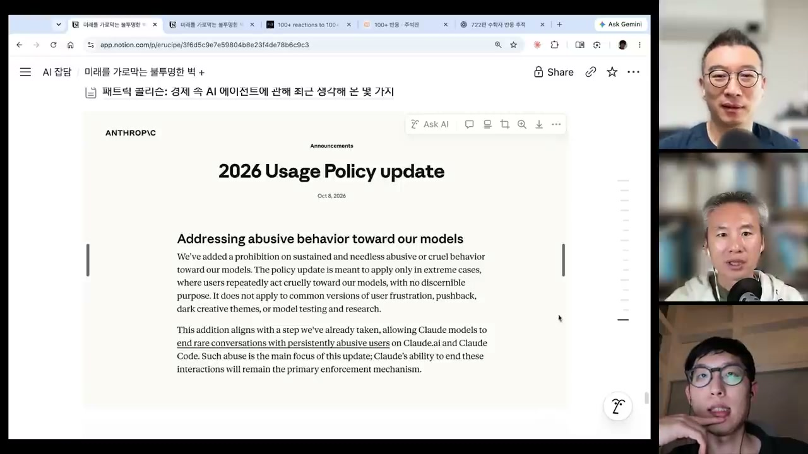
당신의 분야에서,
결과를 믿게 만드는 것은 무엇인가
모델은 바뀌고 가격은 내려가며 새로운 성과는 계속 쌓인다. 그 사이 오래 남을 수 있는 것은 고객의 맥락, 현장 데이터, 신뢰할 수 있는 검증과 책임을 맡는 관계다.
다음 AI 소식을 읽을 때는 한 가지 질문을 더해 보자. “무엇을 할 수 있게 됐는가”에 이어, “그 결과를 누가 확인하고, 어떤 조건에서 쓰며, 누가 책임지는가.” 자신의 다음 실험은 그 답이 아직 비어 있는 곳에서 시작할 수 있다.